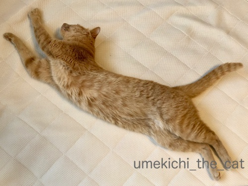
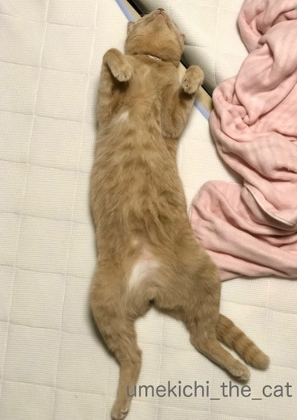
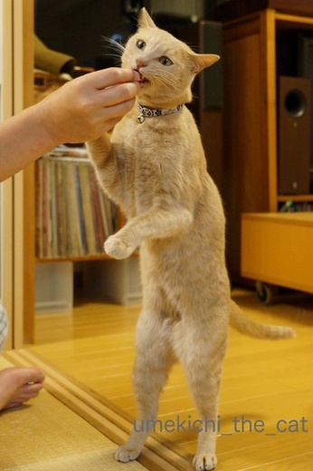
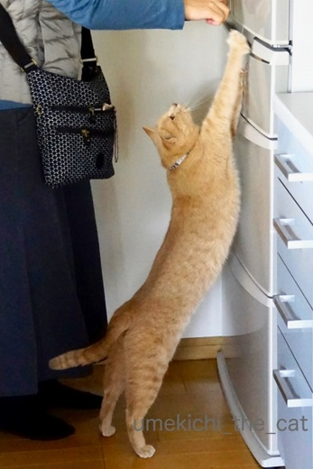
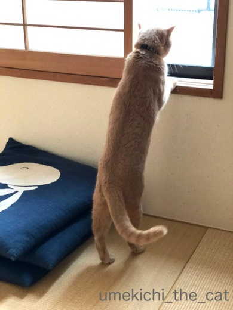
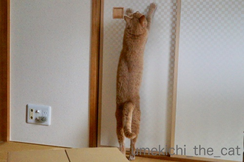

長い？
（梅吉比、普通。）

長い？？
（というより良い開きだ！）

長い。
（断言。姿勢と悪顔がなかなかw）

長いっ。
（反りと踏ん張るあちがいいね！）

これは長い！

これはかなり長い！！
（手が伸びてたらもっと長いはず！）
まだまだ伸び代を予感させる梅吉でしたー( ´艸｀)
修行中ですか？
（21秒です＾＾）
↑ガブッと一押し↑
前記事で取り上げたハッチポッチステーション。
秀逸なダイジェスト版がありました。
Deep Purple、マイケル・ジャクソン、マーヴィン・ゲイのパロディ等、素晴らしすぎます！！


長～～～～～いね（ﾟ□ﾟ）
猫って、胴長短足なのに機敏だよね。
by 英ちゃん (2018-11-19 01:37)
梅吉さん、毛並みの良い襟巻きになりそう。
ぎゃあ～ハッチポッチ・ダイジェスト！！
紹介部分で既に大笑い・・ですが夜中なの
で明日ゆっくり全部見ます！楽しみだ～。
拙ブログのコメント欄にも書きましたが、
ボヘミアン・ラプソディの歌える会場は
「胸アツ応援上映」で検索できるようです。
もう終わっている所が多いし、大抵はレイト
ショーの時間帯だけど今後も100箇所で開催
予定があるらしいです。あと「王様」という
日本語直訳ロックの人が歌う「女王様伝説」
でもボヘミアン・ラプソディが聞けます。
by うりくま (2018-11-19 02:14)
ぜひ尺八を・・・。
代わりに尻尾でも可＾＾
by ぽちの輔 (2018-11-19 06:33)
梅吉さん、長いですねぇ=(^.^)=
うちは丸いですw
虚無僧の修行、とても器用な梅吉さんは
そのうちに立って尺八を吹き始めるかも( ^ω^ )
by ニッキー (2018-11-19 07:48)
梅吉さん♪ 長～いですねぇ～
にゃんこは伸びると聞いてますが
かなり伸びますね(#^.^#)
Ｌｅａも長いですが、手足の長さが（笑
虚無僧の修行？？
おちり丸出しが可愛過ぎますね♪
by きぃ (2018-11-19 07:51)
しなやかですね〜
伸びてますね〜
1番伸びているのは冷蔵庫前でしょうか（笑）
足の先から指の先までピーんと伸びてます。
美味し良いものには目がないのですね。
グンと伸びているときは、
尻尾が後ろ側にピンとなってバランスをとっているのでしょうか。
by kiki (2018-11-19 08:27)
な、長いっ！！
もはやニャンコではなく、別の生物のようです(^_^;)
そしてNHK 。本気度が凄いわ。
スタッフ全員で気合い入ってたはず！！
by よーちゃん (2018-11-19 08:46)
梅吉さんは長いだけでなくちゃんと立つのがすごいです。すくっ! と立った姿を見るとこの間のアバクロのおにーさんを想像してしまいます。
子供番組には時々イッちゃってるものがあって不思議です。何を教育したいのでしょう。オモロい子供の量産化を図っているのか、親を笑わせて和やかな家庭を目指しているのか、偉いですね。ディープパープルにはまってしまい立ち直れまへん。
by zombiekong (2018-11-19 10:19)
おはようございます。
リアルに伸びてますねー？しなやかなな伸びが美しいです。
外を眺める梅吉君、こんなに長かったかな？と思うほど伸びていますね。
ラグビー日本代表メンバーに、選出される事を望みます！！
ラインアウト時の「ジャンパー」として活躍してくれると思います。
足も速いので、フォワードとしてトライにも有効です。
虚無僧？の動画見てたら、スクラムもいい感じかな？
ビートルズ・森のクマさん？ジャストフィット！！
カルチャー・チャークラブもカメカメも良いですが・・・
犬のおまわりさんがナンバーワンですね！？(=^･ｪ･^=)
by Boss365 (2018-11-19 10:35)
短毛ちゃんは、ほんっとに体のラインがわかるので
いいなー^^
梅吉君ナイスバディだわ！！
動画、これ海外の人もわかりやすくていいね^^
by リュカ (2018-11-19 10:49)
梅吉さん、思い切り伸びていますね！
冷蔵庫の前で伸びて何を探しているのでしょうか(^^)
by ma2ma2 (2018-11-19 11:23)
間違いなく長いですよ(#^^#)
踏ん張ったアチ、ぶんぶん揺れるおしっぽ、最高です♪
何事も高みを目指すのはよいことですね。
虚無僧梅吉さん、お願い！そのまま立ち上がって～！！
さすがＮＨＫ、やる時は徹底的にやりますね(≧▽≦)
休みの日にゆっくり大きな音で一緒に踊りながら見たいです。
これは楽しい♪
by ゆきち (2018-11-19 12:52)
猫って長いよね～こんなに長いんだって飼って初めて知りましたよ(*^^*)丸まるとめっちゃちっちゃいし！猫の関節は不思議だ(=ﾟωﾟ)ﾉ
by palpal (2018-11-19 14:33)
梅吉さん立ち上がると背が高いのですね～。
虚無僧も楽しかったです。
by marimo (2018-11-19 16:46)
先生、伸びてますね〜
スレンダーな体型にビックリ。
純白のウェディングドレスが似合いそうです！＾＾
by KENT0mg (2018-11-19 19:25)
梅吉さんながーい。長いな。
にゃんこと暮らしたことがないので
どういうことになっているのか、
わからな～い。
by ふにゃいの (2018-11-19 19:44)
梅吉さん、長いと言うより2本足で歩き出しそうですね。
修行中の動画？は古いドラマですが木枯し紋次郎と峠ですれ違う僧侶を思い出してしまいました。
by kou (2018-11-19 21:07)
梅さん、確かに長～～～い！！ ^^;
少なくともウチのヤツはやらないポーズです。
虚無僧梅さんもいいですね。^^)
ハッチポッチステーションは後でゆっくり観ます。^^;
by yes_hama (2018-11-19 21:41)
長すぎます^^;
修行の賜物ですね。
丸くなって浮き輪の様になれば修行が終わるんですね＾＾
by riverwalk (2018-11-19 22:29)
にばーい、にばーい！
おなかコチョコチョやりたくなります♡（そしてガブガブ？）
修行・・・これはガブガブの道を極める修行でしょうか。ですよね。
エドガワサリバンショー！（笑）
グッチさんはやっぱり、アンドーナツが秀逸ですね。
by Ja-Kou66 (2018-11-19 23:59)
びよよ～～～ん♪
長いですよーーーー（笑）
きっと、バディがしなやかなのでしょう(^^♪
我が家のポポはカチカチ系なので、こんなに伸びませんよｗ
そして、カゴにINする梅吉さん。めっちゃ笑えました。
オシリぽん！でビクン！！！ くぅぅぅ、かわゆい♡
先日、ボヘミアン・ラプソディー観てきました。おすすめのIMAXで！！
超ウルトラ良かったです。途中、涙腺崩壊。
改めて、クイーンは名曲揃いです。
まだ、脳内のリフレインが止まりません。
by morichan (2018-11-20 15:53)
最初の姿は空を飛び跳ねてるような姿勢が良いですね。
それにしても胴体が長いんじゃ無い？(-_-;)。
by 旅爺さん (2018-11-20 17:46)
梅吉さん、長い、長～～～～い！
伸びしてるすんなりライン、きれいですね＾＾
食べ物につられていつもより背が伸びたみたいに見えたり＾＾
冷蔵庫の前が反っていて面白い～～♪
虚無僧、ぷぷぷ‥ 小物揃えたくなりますね=＾。＾=
ハッチポッチステーション、すごすぎ～凝ってますね！
歌詞が‥動きが～～笑いすぎでお腹痛いです＾o＾
by sana (2018-11-20 19:06)
梅さまも長いですねー
我が家も金時以外みんな長くて、
動物病院でも長ネコさんと言われてます。
ネコの骨格も色々で面白いですね^ ^
by ryang (2018-11-20 22:34)
長いね～( ´∀｀ )
自分でドアを開けられそう～( ´艸｀)♡
by マーヤ (2018-11-21 00:04)
長い～の色々バージョン(≧▽≦)
ホント！まだまだ伸びしろがありそう。今後の成長がｗ楽しみですね。
虚無僧への変身も早っ！ｗ
動画全部みたよ～。ジーン・シモンズが歌うデトロイト・ロック・シティ。
一瞬本人かとｗ
by emi (2018-11-21 15:50)
英ちゃんさん＞
そうですよね！
手足の長さと胴の長さの比率が人間と全然違いますよね＾＾
が！！梅吉は手足も結構長いんですよ。
顔も小さくて羨ましいデス。あら？話が違う方向にwww
うりくまさん＞
長さ的には襟巻きに十分ですね＾＾
首に巻くと暖かさといつガブガブされるかとのスリル満点で
寒さとは無縁でいられそうですw
「胸熱応援上映」情報ありがとうございます！！
残念ながら我が家付近では終わってしまった様で・・・
ビデオ配信になったら我が家で気兼ねなく
歌いながら見ることにいたします( ´艸｀)
王様！すぐにあのほっぺたにぐるぐる渦巻きヒゲの顔が
思い浮かびましたよ〜。
「女王様伝説」聴いてみます＾＾
ぽちの輔さん＞
尻尾に尺八みたいな節と穴の模様でもつけましょうか(*>艸<)
ミニチュアを用意した方が早いか・・・(-_-メ)
ニッキーさん＞
確かに0(≧▽≦)0
ノエルさんを除くとみなにゃんとても「大きな丸」ですね！
毎日にゃんずさん達から「大きな丸」をもらっている様で
幸せな気分になれそうです(^_－)☆
梅吉が立ち上がって尺八を吹き始めたら・・・
修行に行ってしまいそうです(꒦ິ⌑꒦ີ)
（うちから修験道の聖地が結構近いw）
きぃさん＞
見た目以上に伸びるのはにゃんこならではですね(≧▽≦)
Leaちゃんも長いけど（笑）見た目以上になることはないですものね！
手足は・・・梅吉結構長いのでLeaちゃんくらいあるかも。
今度測りっこしましょうかw
kikiさん＞
冷蔵庫前はモチベーションが違いますから（笑）
一番長いのでしょうか( ´艸｀)
食材が入った扉をあけてもお目目キラキラですが
製氷室の氷をガサガサしてもお目目キラキラで飛んできますw
伸びている時のおしっぽ、ご指摘で見直して気づきました。
どの写真もほぼ同じ形でピンとなってますね！！
おしっぽの先がくいっとカーブするのがバランスの秘訣でしょうか(≧▽≦)
よーちゃん＞
色がそう思わせるのかもしれませんが
プレーリードッグとかミーアキャットみたいだなって思ってます。
時々未知の生物にもなりますよwww
ハッチポッチ、大人の洒落た本気のおふざけ感が良いですよね＾＾
貴重な番組だと思いました！
グッチ裕三さんは「子供にはわからないのでは？」との質問に
「親が笑っていれば子供もしあわせなんですよ」と答えたそうです。
zombiekongさん＞
脱いだらあの筋肉の梅吉ですから！
すくっ！と直立キープも容易いのかもしれません(≧▽≦)
「すごーくつかれーた やすんでいんですかい？」ですよねっ。
私が一番初めに見たパロディがディープ・パープルでした＾＾
もちろんしばらく可笑しくて立ち直れなくwww
ハッチポッチは最初の司会を関根勤さんが勤めていたそうですが
その頃は普通の子ども番組だった様です。
グッチ裕三さんになってこの路線に。
グッチさん曰く「親が笑っていれば子供もしあわせなんですよ」
との事です。
Boss365さん＞
梅吉ジャンパー良いですね！
ホールドしていくれる人がいなくても飛び上がっちゃいますよ(*>艸<)
（鬼の）タックルも得意なので日本代表に招集される事間違いなし？
ハッチポッチ、どのパロディもよく考えたな、と感心しますよね！
スタッフが私たちとほぼ同世代、そして洋楽を聴きこんでたんだなと
親近感を持って見ていました＾＾
リュカさん＞
うふふ＾＾梅吉は脱いだらもっと凄いのよ♡
最近ある映画を見てちゃんとした映像を残しておいたら
後世まで残るんだよねーって改めて思って。
積極的に梅吉動画をアップすることにしたの。
どの国の人が見ても状況をわかってくれる様に工夫して＾＾
梅吉が虹の橋を渡っても私たちがこの世を去っても
見てくれる人がいるといいなって思ってます！
ma2ma2さん＞
冷蔵庫の前はおやつが出てくるのを待っているんですよ＾＾
モチベーションがあると伸びも違うみたいですw
ゆきちさん＞
思いっきり伸びるために「ふんぬっ！」と
あちを踏ん張るのは欠かせない様です( ´艸｀)
kikiさんのコメントで気付いたのですが
伸びているときはおしっぽにも力が入っている様で
ピンと張りつつも先の方がクイッと曲がっていて。
新発見でした！！
ハッチポッチ、気に入ったのがありましたら
単独の動画もありましたよー＾＾
ディープ・パープルの
「すごーくつかれーた やすいんでいんですかい？」
も最高ですよ0(≧▽≦)0
palpalさん＞
長くもちっちゃくも、太くも細くもなって
自由自在って感じですよね＾＾
marimoさん＞
もともと胴は長めなんですが
立ち上がると更に伸びるんですよw
冷蔵庫前はおやつ目当てなので更に伸びる、伸びる(≧▽≦)
虚無僧のゴミ箱（使ってないゴミ箱なんです）は幼い時の遊び場所。
昔は全身入ってたので今でも本にゃんは
全身隠れている、と信じて疑ってない様です(*>艸<)
KENT0mgさん＞
あら＾＾梅吉花嫁さん( ´艸｀)
手足も長いし顔も小さいし
何よりキャットウォークが得意なので
パリコレのトリを飾る日も来るかもしれませんwww
ふにゃいのさん＞
大体のにゃんこはびよーんと伸びるんですよ＾＾
同時に短くもなる・・・
その間肉とは骨とかどうなってるの？
と私も不思議でなりません(｡-_-｡)
kouさん＞
直立姿勢がなかなかでしょう＾＾
脱ぐと筋肉がすごい梅吉なので
二足歩行するための筋肉も十分だと思います！
村田和人さんは「耳鳴りの夏」も好きです＾＾
yes_hamaさん＞
アズ氏はゼブザブの上が定番ですものね＾＾
梅吉はあちこちで縦にも横にもびよ〜んと伸びております！！
ハッチポッチはお休みの日のお楽しみにしてくださいませm(_ _)m
reverwalkさん＞
毎日びよ〜んとしているとどんどん長くなる様な・・・
おおお、円で完結、禅画の様ですね＾＾
Ja-Kou66さん＞
チマっと短くなっている時と比べると
本当に２倍３倍ありそうですよw
修行の方は完全に隠れることを目指している様で・・・
本にゃんは完璧だと思っている様ですが
お尻叩かれてあら、びっくり・・・(*>艸<)
アンドーナツ、グッチさんご本人も気に入っていらっしゃる様で＾＾
morichanさん＞
基本ガチムチ系なんですが
しなやかというかぬるりと筋肉を緩ませるのも得意なんです。
抱っこしようとするとぬるり、ぬるりとよく逃げられますw
カゴ（これゴミ箱なんです）幼い頃この中に入って遊んでいたので
いまでも頭だけ入れて全身入った！と思っている様ですよ( ´艸｀)
お尻叩かれてあら？なんでやねん！！みたいなwww
「ボヘミアン・ラプソディ」ご覧になりましたか！！
余韻がいつまでも続く映画ですね・・・
フレディの歌声、QUEENの音楽偉大です。
旅爺さん＞
普段はそんなに感じ無いのですが縦になると長〜い。
これからも褒めて伸ばしていこうと思っています(*>艸<)
sanaさん＞
おっしゃる通りです！！
冷蔵庫から出てくるおやつへの期待度が伸びにも表れていますよ(*>艸<)
モチベーションが高いせいか伸びが一番美しいかもしれません＾＾
ハッチポッチステーション、これだけクオリティの高いパロディ
大人の番組でもそう無いですよね。
何回見ても笑っちゃいますwww
rynagさん＞
金時くんはガチっと丸いタイプでしょうか( ´艸｀)
病院も認定するほどの長さ、気になりますー！！
ん？病院では固まっちゃうにゃんこが多いと思うのですが・・・
長くなるということはリラックスしている証拠？
皆ニャン度胸が良いのか？
先生が猫も警戒心を解くほどの名医なのか(≧▽≦)
マーヤさん＞
それが！！開けるのですよwww
ノブタイプだけじゃなく引き戸も踏ん張るあちで開けちゃいますwww
emiさん＞
まだまだ伸びそうでしょ0(≧▽≦)0
今後もどんどん褒めて伸ばしていきたと思ってます(*>艸<)
虚無僧はね、かくれんぼの修行の様ですよ・・・
完璧に隠れたと思ったのになぜかおしりぽん！
まだまだ修行不足を実感した様ですw
ジーン・シモンズに反応されましたね！
映画の「デトロイト・ロック・シティ」はご覧になりましたか？
私は当時のエドワード・ファーロングが好きでした(〃▽〃)
by ちぃ (2018-11-21 20:10)
梅吉さん、長いモデルさんのようです。
by ニコニコファイト (2018-11-22 06:24)
ニコニコファイトさん＞
パリコレ、スーパーモデルって感じでしょうか(*>艸<)
ニコニコファイトさんはスーパーモデルってことば
ご存知かなぁ・・・
かれこれ20年くらい前に流行ったんですが(^_^;)
by ちぃ (2018-11-22 16:08)